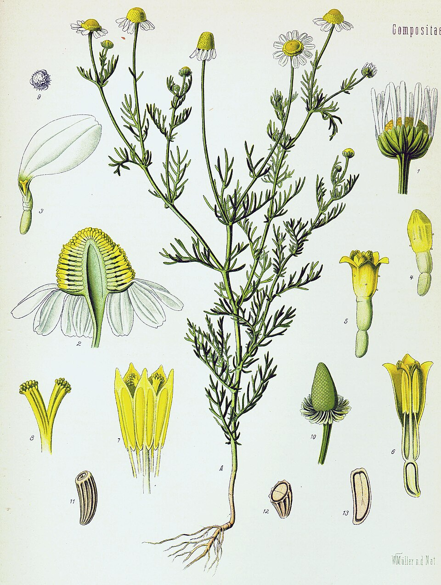
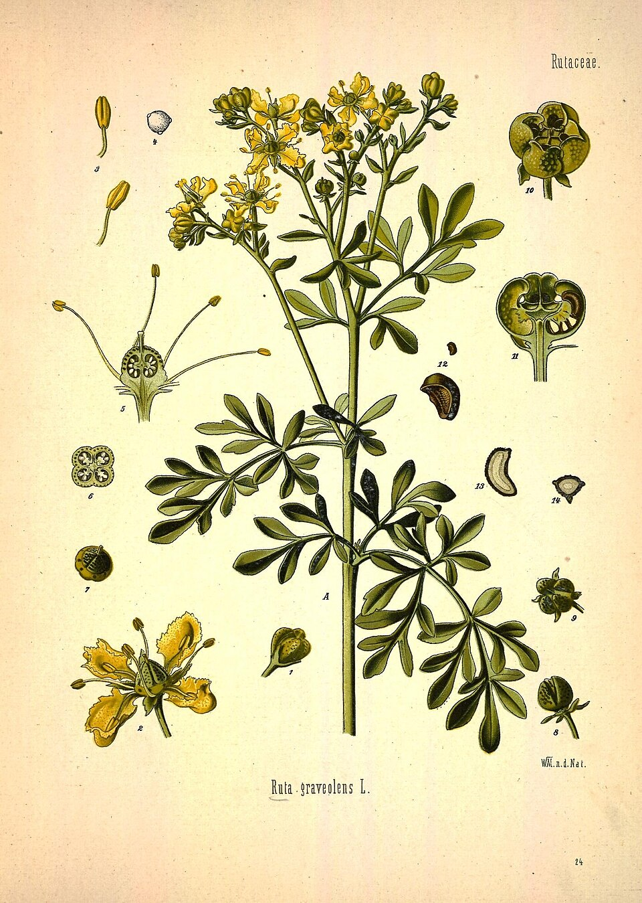
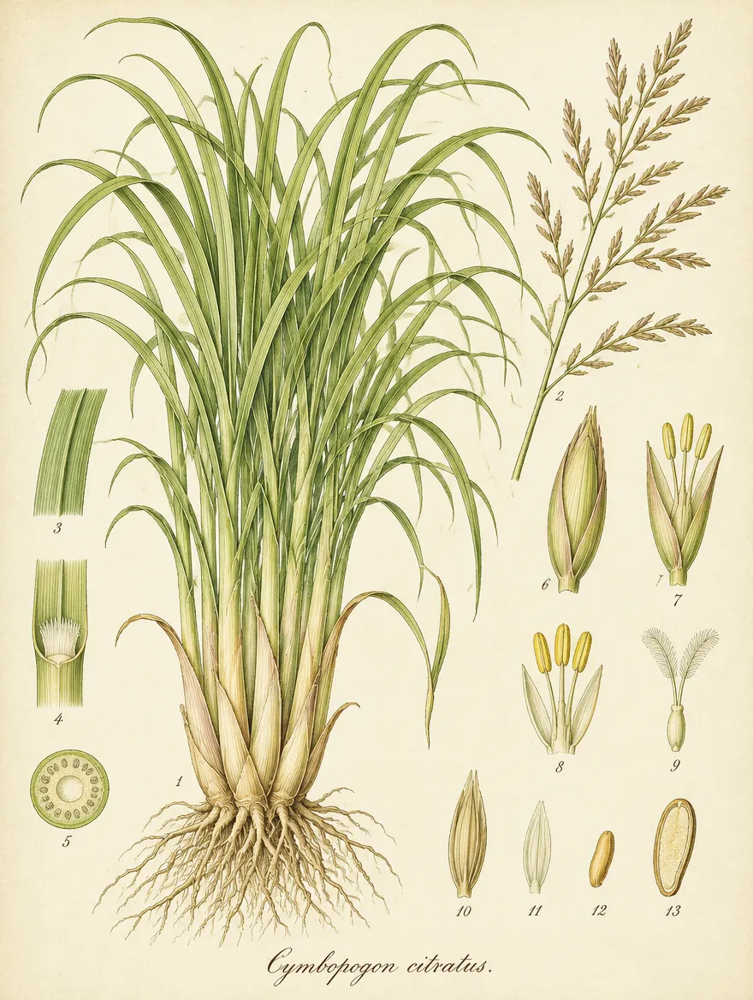

Manzanilla
Matricaria chamomilla- Familia
- Asteraceae
- Ciclo
- Sin indicar
- Fuente
- Demostración del equipo (sin validar)
Lámina de la especie (Köhler, 1887). Fuente
Maqueta A · ficha del huerto · evolución: pliegos de herbario, latín en serif, botón 3D con vista previa
Huerto de demostración preparado por el equipo a partir de un croquis provisional.
Recorrer en 3D Reto Documentación lunar


Lámina de la especie (Köhler, 1887). Fuente

Lámina de la especie (ilustración generada con IA)